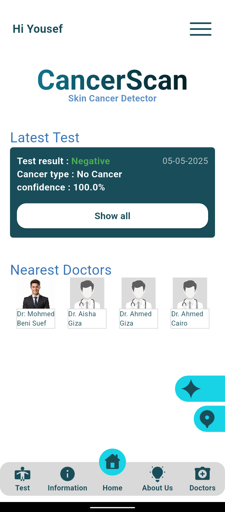

About the project
CancerScan brings a skin-check flow, educational information, and nearby doctor discovery into one mobile application.



A graduation project exploring on-device AI support for skin-cancer screening, doctor discovery, and medical guidance.
CancerScan brings a skin-check flow, educational information, and nearby doctor discovery into one mobile application.
Explore the app from onboarding and screening to information and doctor discovery.